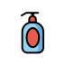
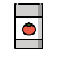

Papel
Jornais, folhas e caixas de papelão.
Mantenha seco e separado dos restos de comida.
RECICLÁVEL SECOCUIDAR COMEÇA PERTO DE CASA
Separar os resíduos pode ser mais simples do que parece. Descubra o destino de cada material e faça a sua parte, começando em casa.
Aprenda a separarUm guia da comunidade, para a comunidade.

O que você separa hoje
pode ganhar um novo amanhã.
Comece na sua casa
Separe com cuidado
Cuide do seu bairro
01 / GUIA DE SEPARAÇÃO
Conheça cinco grupos de resíduos
presentes no nosso dia a dia.
Jornais, folhas e caixas de papelão.
Mantenha seco e separado dos restos de comida.
RECICLÁVEL SECOGarrafas PET, potes e embalagens.
Retire os resíduos e confira o que a coleta aceita.
RECICLÁVEL SECOGarrafas e potes de alimentos.
Proteja e identifique cacos para evitar acidentes.
RECICLÁVEL SECO
Latas de bebidas e de conservas.
Esvazie as embalagens antes de encaminhar.
RECICLÁVEL SECOCascas de frutas e restos de vegetais.
Separe dos recicláveis. Conheça a compostagem.
OUTRO DESTINONem todo resíduo tem o mesmo destino. A aceitação dos materiais varia conforme o serviço de coleta da sua cidade.
02 / DO HÁBITO AO DESTINO CERTO
Reserve um recipiente para os recicláveis secos. Deixe os orgânicos e os rejeitos separados.
Retire sobras das embalagens e preserve o papel seco. A separação facilita o trabalho de quem faz a triagem.
Procure no site da prefeitura os dias de coleta seletiva, ecopontos e cooperativas. Confirme os materiais aceitos antes de sair.
Ainda não sabe onde entregar? Consulte o serviço de limpeza urbana da sua cidade. Este guia não agenda nem realiza coletas.
12
OBJETIVO DE DESENVOLVIMENTO SUSTENTÁVEL
03 / SOBRE O RECICLA BAIRRO
O Recicla Bairro é uma proposta de serviço educativo para moradores que querem separar melhor seus resíduos e encontrar orientação sobre a coleta local.
O projeto se relaciona com o ODS 12, especialmente a meta 12.5: reduzir a geração de resíduos por meio da prevenção, redução, reciclagem e reúso.
Antes de descartar, pense se é possível consumir menos ou reutilizar. Reciclar é uma parte desse cuidado.
Conheça o ODS 12 no site da ONUA MUDANÇA PODE COMEÇAR COM VOCÊ
Conheça o cadastro demonstrativo do Recicla Bairro.